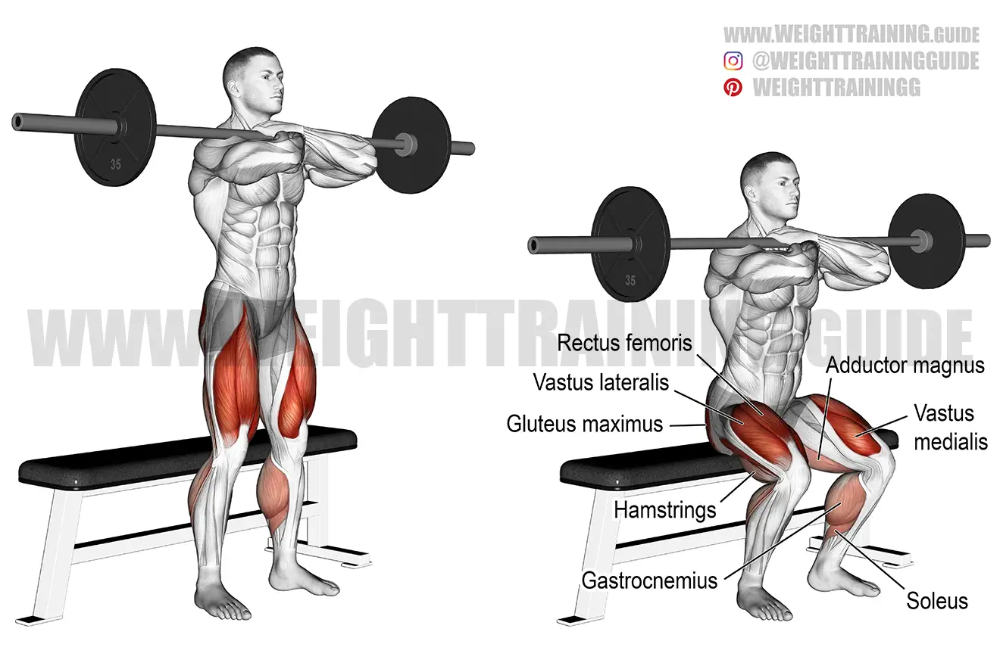

Warm Up
- Treadmill or Stationary Bike: 5-10 minutes
- Dynamic Stretches: leg swings, arm circles, etc.
Exercise 1: Barbell Squats
This is the heaviest day for squats in the week

- Reps: 5
- Tempo: 3-0-1
- Rest: 2-3 minutes
- Stand with your feet hip-width apart and your chest up.
- Hold the barbell on your upper back with your hands slightly wider than shoulder-width apart.
- Lower your body as far as you can by pushing your hips back and bending your knees.
- Pause, then slowly push yourself back to the starting position.
Exercise 2: Front Squats

- Sets: 3
- Reps: 6
- Tempo 4-2-3
- Rest: 4
- Place the bar on the higher part of your chest and brace.
- Stand with your feet roughly shoulder width apart allowing for maximum knee flexion.
- Proceed to go down as low as possible and explode up.
- The goal is to create as much mechanical tension as possible.
- These 2 exercises are in coalition to create maximum strength from the legs and force balances. Return to Main Page